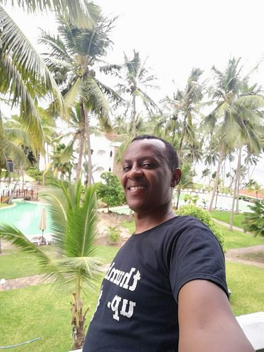

Web Development Portfolio

About Me
Hi Everyone, My name is Oscar and I am an Experience Assurance and Compliance professional working for a Mobile Network Operator in Kenya.I am passionate about Technology because of its ability to improve people’s lives in every sector from health, education, justice, reducing poverty and bridging the gender divide.
I am currently interested in learning Cloud Computing, Github, Python and Web Development.
Background
I have 6 years’ Experience in Information Technology mainly in Computer Support and Network Administration.
I also have 4 years’ Experience as an Experience Assurance and Compliance professional.
Sample Learning Projects
See below a list of projects in my programming journey. The first project is a collection of python scripts which you can acces here that I developed as I was learning Python.
Some of the topics covered include:
- IF Statements.
- Dictionaries.
- For Loops.
- Functions.
- Lists.
The second is a static Website that I built as I was getting started with HTML and CSS. You can access the static website on github pages by clicking here. Some of the
things that I learnt in the project include:
- Adding an image into the Website.
- Styling my webpage with custom CSS stylesheet.
- Using different HTML elements to change font size.
Here is also a list of things that I am interested in learning in my Web Development Journey.
- Git Kraken
- Bootstrap
- NPM
- Visual Studio Code
Interests and Hobbies
- Reading Non Fiction Books
- Listening to Music
- Coding and Learning new Technologies